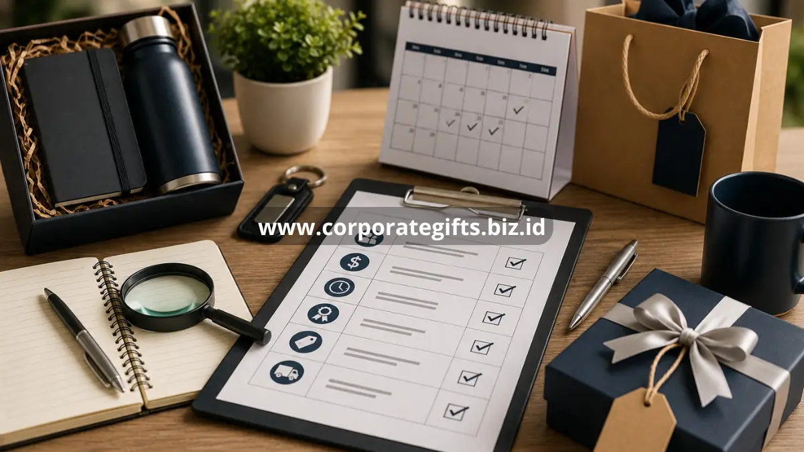

Poin Penting:
- Kesalahan dalam memilih corporate gifts dapat menurunkan kesan profesional perusahaan di mata klien maupun karyawan.
- Perencanaan anggaran dan waktu produksi yang matang membantu mencegah masalah di kemudian hari.
- Uji kualitas produk sebelum produksi massal merupakan langkah penting yang sering terlewat.
- Konsistensi branding pada corporate gifts perlu diperhatikan agar pesan merek tersampaikan dengan baik.
Apa Saja Kesalahan Umum dalam Memilih Corporate Gifts?
Kesalahan umum dalam memilih corporate gifts meliputi pemilihan hadiah generik, pengabaian kualitas produk, dan minimnya perencanaan waktu produksi.
Berikut beberapa kesalahan yang paling sering terjadi:
- Memilih hadiah generik tanpa riset. Hadiah yang dipilih tanpa mempertimbangkan preferensi penerima cenderung terasa kurang personal dan mudah dilupakan.
- Mengorbankan kualitas demi menekan biaya. Produk dengan kualitas rendah dapat menimbulkan kesan kurang profesional meski desainnya menarik.
- Tidak memperhitungkan waktu produksi. Pemesanan yang dilakukan terlalu mepet dengan momen pemberian berisiko membuat hadiah terlambat diterima.
- Melewatkan proses sampel atau uji kualitas. Tanpa pengecekan sampel, risiko cacat produksi dalam jumlah besar menjadi lebih tinggi.
- Mengabaikan konsistensi branding. Penempatan logo atau warna yang tidak sesuai pedoman identitas merek dapat mengurangi efektivitas hadiah sebagai media branding.
- Tidak menyesuaikan hadiah dengan segmentasi penerima. Memberikan hadiah yang sama untuk seluruh klien tanpa mempertimbangkan level kerja sama dapat terkesan kurang strategis.
Apa Dampak Kesalahan Memilih Corporate Gifts bagi Perusahaan?
Kesalahan dalam memilih corporate gifts dapat berdampak pada menurunnya kesan profesional perusahaan serta berkurangnya efektivitas hadiah sebagai media penguat hubungan bisnis.
Beberapa dampak yang mungkin timbul:
- Menurunnya citra profesional di mata klien atau mitra bisnis akibat kualitas produk yang kurang sesuai standar.
- Pemborosan anggaran akibat produk yang tidak relevan atau tidak digunakan oleh penerima.
- Keterlambatan pengiriman yang dapat mengurangi momentum penyampaian pesan pada acara tertentu.
- Berkurangnya efektivitas branding apabila desain dan kemasan tidak konsisten dengan identitas visual perusahaan.

Bagaimana Cara Menghindari Kesalahan dalam Memilih Corporate Gifts?
Cara menghindari kesalahan dalam memilih corporate gifts dimulai dari perencanaan matang, riset penerima, dan proses uji kualitas sebelum produksi massal.
Beberapa langkah yang dapat diterapkan:
- Lakukan riset terhadap profil penerima sebelum menentukan jenis hadiah, baik untuk klien maupun karyawan.
- Tentukan anggaran dan jadwal produksi sejak awal agar proses pengadaan berjalan sesuai rencana.
- Mintalah sampel produk sebelum melakukan pemesanan dalam jumlah besar untuk memastikan kualitas sesuai ekspektasi.
- Periksa portofolio vendor dan bandingkan beberapa penawaran sebelum memutuskan kerja sama.
- Pastikan desain dan kemasan sesuai pedoman identitas merek perusahaan, termasuk logo, warna, dan pesan pada kartu ucapan.
- Sesuaikan jenis hadiah dengan segmentasi penerima, baik berdasarkan level kerja sama klien maupun posisi karyawan.
Panduan lebih lengkap mengenai langkah memilih corporate gifts secara umum dapat dibaca pada artikel corporate gifts panduan lengkap.
Bagaimana Memilih Vendor Corporate Gifts yang Tepat untuk Menghindari Kesalahan?
Pemilihan vendor yang tepat dapat membantu mengurangi risiko kesalahan dalam proses pengadaan corporate gifts.
Beberapa hal yang perlu diperhatikan saat memilih vendor:
- Periksa rekam jejak dan portofolio vendor pada proyek serupa sebelumnya.
- Tanyakan estimasi waktu produksi secara jelas sejak awal negosiasi.
- Pastikan vendor bersedia menyediakan sampel sebelum produksi massal.
- Perhatikan kejelasan komunikasi vendor terkait revisi desain dan kendala produksi.
Untuk ide hadiah yang relevan bagi karyawan setelah proses pemilihan vendor selesai, dapat dilihat pada artikel ide corporate gifts untuk karyawan beserta manfaatnya.
Selain itu, komunikasi yang terbuka dengan vendor mengenai kendala produksi, seperti keterlambatan bahan baku atau perubahan desain, membantu perusahaan mengambil keputusan lebih cepat apabila muncul kendala di tengah proses pengadaan. Vendor yang responsif terhadap pertanyaan dan terbuka mengenai kapasitas produksinya umumnya lebih dapat diandalkan untuk kebutuhan corporate gifts dalam jangka panjang.
Bagaimana Menyusun Checklist Sederhana agar Kesalahan Tidak Terulang?
Checklist sederhana dapat membantu tim pengadaan memastikan setiap tahapan pemilihan corporate gifts telah dipertimbangkan sebelum keputusan akhir diambil.
Beberapa poin yang dapat dimasukkan dalam checklist tersebut:
- Profil dan segmentasi penerima sudah diidentifikasi sebelum menentukan jenis hadiah.
- Anggaran dan estimasi waktu produksi telah disepakati bersama vendor sejak tahap awal.
- Sampel produk telah diterima dan diperiksa sebelum pemesanan dalam jumlah besar dilakukan.
- Desain dan penempatan logo telah sesuai dengan pedoman identitas merek perusahaan.
- Jadwal pengiriman telah dikonfirmasi agar hadiah dapat diterima tepat waktu sesuai momen yang direncanakan.
- Rencana cadangan telah disiapkan apabila terjadi kendala produksi atau keterlambatan dari vendor.
Dengan checklist yang jelas, tim pengadaan dapat meminimalkan risiko kesalahan berulang dan memastikan setiap program corporate gifts berjalan lebih terstruktur dari waktu ke waktu.
FAQ
Apa kesalahan paling umum saat memilih corporate gifts?
Kesalahan paling umum adalah memilih hadiah generik tanpa riset terhadap preferensi
penerima, sehingga hadiah terasa kurang personal dan mudah dilupakan.
Bagaimana cara memastikan kualitas corporate gifts sebelum produksi
massal?
Kualitas dapat dipastikan dengan meminta sampel produk terlebih dahulu sebelum melakukan
pemesanan dalam jumlah besar.
Apakah keterlambatan produksi sering menjadi masalah dalam pengadaan corporate
gifts?
Keterlambatan dapat terjadi apabila waktu produksi tidak diperhitungkan sejak awal,
terutama pada momen dengan permintaan tinggi seperti menjelang hari raya.
Apakah perusahaan perlu bekerja sama dengan lebih dari satu vendor?
Bekerja sama dengan lebih dari satu vendor dapat menjadi opsi cadangan yang berguna
apabila salah satu vendor mengalami kendala produksi mendadak.
Menghindari kesalahan dalam memilih corporate gifts memerlukan perencanaan yang matang, mulai dari riset penerima, pemilihan vendor, hingga uji kualitas produk sebelum produksi massal. Dengan langkah yang tepat, corporate gifts dapat memberikan dampak positif yang maksimal terhadap hubungan bisnis maupun budaya kerja perusahaan.